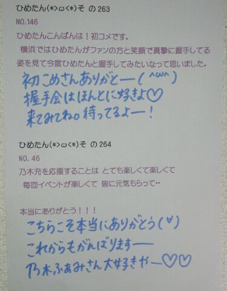

| 2013/05 25 Sat | ひめたん大図鑑47(2012年4 月) |
ひめたん大図鑑とは何か。
それは、いわゆる
「過去の質問返しをまとめたもの」って感じかな。
過去なので時制とかおかしなことになる質問も
中にはあるかもだけど、
ま、そゆことなんでね(*^^*)
それは、いわゆる
「過去の質問返しをまとめたもの」って感じかな。
過去なので時制とかおかしなことになる質問も
中にはあるかもだけど、
ま、そゆことなんでね(*^^*)

975
 おむすびころりんの話には色々なバリエーションがあるらしいです
おむすびころりんの話には色々なバリエーションがあるらしいです
ひめたんが知ってるおむすびころりんはどんな話カナ?
昔むかしおじいさんがおむすびを食べようとしました。
そしたら手が滑っておむすびが転がり落ちていきました。
おむすびは穴に落っこちてしまいました。
すると穴の中から
「おむすびころりんすっとんとん。」
という楽しそうな声が聞こえてきました。
おじいさんは愉快に思い、持っていた
もういっこのおむすびも穴に落としてみました。同様に
「おむすびころりんすっとんとん。おじいさんころりんすっとんとん」。
すると次の瞬間おじいさんは穴の中に吸い込まれてしまいました。穴の中はねずみの国でした。
「おじいさん、おむすびを落としてくれてありがとう。」
ねずみたちはお礼にごちそうを振る舞いました。
そしておじいさんが帰ろうとすると、ねずみがおじいさんにこう言いました。
「お土産に大きい箱か小さい箱、どちらか持って帰ってください。」
おじいさんは小さい箱を持って帰りました。
すると中から大判小判がたくさん出てきました!
それを聞いた隣のおじいさんは、早速次の日おむすびを穴へ一気に落としそれから隣のおじいさんは穴へ飛び込みました。
ねずみたちはごちそうを振る舞いました。
そしてお土産にと、大小の箱を差し出しました。
隣のおじいさんは思いました。
(ここでネコの物真似をしたら驚いてねずみが逃げる。
そうしたら大小両方の箱を持って帰れるではないか。)
そこで隣のおじいさんは言いました。
「にゃあお。」
驚いたねずみたちは逃げてしまいました。
にやにや。
すると!突然辺りが真っ暗になってしまいました!
箱も出口も見当たりません。
とうとう隣のおじいさんはモグラになってしまいました。
にゃんにゃん♪
976
「ひめかわうぅぃぃね」と連呼しまくる謎の集団は覚えてるカナ?
覚えとる(^O^)!
...滋賀だっけ?あれ富山?
977
ポルノグラフィティ知ってるかな?好きな曲とかあったら教えてほしい〜な(^_^)
もちろん知ってる♪
ハネウマライダーとか楽しいよね!
アミューズAAAってイベントで、武道館でタオル回したことあるある(o>ω<o)
978
コメ返キターーーーー!っておもったけど俺の質問が無いのは気のせい?(笑)
にゃ。
うっそ本当??突っ走りすぎて置いてきたかもしれーん
もっかい聞いてー'`
979
みゅみゅとも仲良いだよね?普段どんな話をしているですか?
若月『ひめたん！一緒に痩せよう！(笑)』
中元『うん!!』
若月『一緒に歩きにいこう！』
中元『うん!!いく！』
若月『頑張ろう！』
中元『うん!!』
若月『とりあえずひめたん可愛いな!』
中元『ぇへー♪(/ω＼*)照』
若月『ひめたん好きだぞ！』
中元『うちもすきぃー！』
若月『へへっ(σ*´∀｀)照』
こんなん(笑)
byみゅみゅ☆
980
「日本ツインテール協会」ってゆーのが実在するらしいよ...(笑 知ってたぁ?
へー可愛いいい☆
ひめたんも入れてもらおかな(*^^*)
とりあえず検索してみるしか!
981
苦手な野菜とかありますか?
にーんじんったまーねぎっじゃがーいもっぶたーにく
おなーべでっいたーめてっぐっつぐっつ煮ーまーしょ♪
質問から反れた←
ピーマン、とまと、かいわれ大根、なす、ピクルス、あとなんかあったけな。
982
最近BUMPさんは聴いてるかな?
相変わらず寝る前に音楽聴いてるんだけど
最近は曲再生した瞬間に寝てるからじっくり聴いてなーい(>_<)
983
自動車レース見た事ありますか?
ひめちゃんピンクの文字で書かれたいです
ぴんくの文字で書きましたよ(o>ω<o)♪
自動車レース見たことない以前に、自動車にもレースがあるんですね!
楽しそうだけど、ぎーがしゃんってなるの怖いっ
984
野球の広島カープの事は知っていますか?知ってる選手いますか?
カープ知っとるよ(^O^)/
といって、こちらも同じくあんま詳しくないけれども←
前けん栗けん創健ほーむ♪
...あっこれcmソングです。広島人には通じるはず。
985
帽子はよくかぶりますか??
2012年になってから1回もかぶってない多分!
春だし日焼けするの嫌だし、そろそろ帽子の季節かな(*'`*)
986
両親のこと何て呼んでますか?
(ノ・o・)ノ{ぱぱー!ままー!!
987
よみうりランドでの一体感楽しかったよね?
楽しかった!
ほんっと楽しかった(o>ω<o)!
一緒に盛り上がってくださったみなさん感動をありがとうですっ
988
埼玉県は行ったことある?
埼玉ある!
さいたまスーパーアリーナ行きました(^-^)♪
今日はおともだちの誕生日だったので
炭酸水を振りまくって
本日の主役に浴びせました( ^ω^ )
楽しかったったー♪


(＊´・ω・＊)
コメント(105)
2013/05/25 14:06